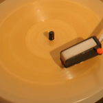
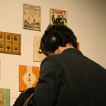

 
Featured Curators: Mat Schulz & Rui Silva
Mat Schulz is co-curator of Unsound Festival and our current gallery show Sound Postcards, along with Rui Silva. They are dedicated to the exhibition and presentation of under exposed Eastern block artists and musicians.
Their current show in the gallery focuses on a collection of found sound postcards cold war ear Poland
Curatorial Statement by Mat Schulz for Sound Postcards
During the week, Hala Targowa market in Krakow is an open-air area to buy fruit, vegetables, meat and cheese. But on Sundays it transforms into a flea market. Between professional antique dealers and second hand book traders, old men and women bring objects from their apartments and houses and lay them out on the ground to sell.
The objects come, often, from the communist era: slide projectors, plates, clocks, lamps, clothing, plugs, and ancient calculators. Such objects hold a certain fascination, coming from a different time, with its own aesthetics and values. Hala Targowa can start to look like a museum. Every object has a story, often connected to the person who sells it to you. These are stories forever closed off to the buyer. You can only imagine.
Among other objects I found, one day, some years ago, a square postcard image of a cat, upon which had been printed the vinyl tracks of a record. I turned the card over. The song was Dance Kung Fu and Love Peace and Happiens (sic) by C. Douglas. The image and the song had no connection at all, which somehow made the artifact even better. Although there was a place to write an address and stick a stamp, it had never been sent.
It was a Pocztowka Dzwiekowa – which translates into English as Sound Postcard.
In the months that followed I kept returning to Hala Targowa, and my eyes became more keenly peeled, looking for Pocztowka Dzwiekowa amongst the other debris. The cards were rarely sold by mainstream antique dealers; rather, it was those working at the periphery of the market, often poor, who had them.
Although similar objects existed in other countries, I later found out that in communist Poland sound postcards were incredibly popular, They had their heyday in the 1960s and 1970s when it was difficult to buy real vinyl. People would actually purchase these cards and take them home to play on portable record players. The record players had names like Bambino, and when opened up the case functioned as a speaker, which was connected to the player.
One of the interesting things about Pocztowka Dzwiekowa is that it seems they were hardly ever sent - at least, this is what the lack of stamped and addressed postcards suggests. They were, very often, collected, just as almost all people once made vinyl and cassette collections.
I showed some sound postcards to graphic designer Rui Silva, and we began collecting them together. In the beginning we would buy anything. Later we became more demanding. At this point, we selected cards on the basis of their design. The song was secondary.
We also spoke to our Polish friends about Pocztowka Dzwiekowa. The younger ones often had no idea what we were talking about. For them, these cards, that a few decades before had been so popular, had faded into absolute obscurity. Older Poles smiled, or laughed, saying that probably they had some cards in their house somewhere, and would give them to us. Few people found the cards unique.
Neither Rui nor I had record players, and for many months the cards were simply visual objects to us. Then came a day when, after one Hala Targowa expedition, we were sitting in a café that had an old record player. We asked if we could listen to a Pocztowka Dzwiekowa. The young waitress was one of those Poles who had never seen one of these cards before, but she put it on. The card, suddenly, came to life, revealing what its apparent purpose was, the reason for its existence: to play music.
The quality, of course, was bad. It was mono, filled with ghostly crackles, hisses and pops, but still, the song was audible, by the so-called Polish version of The Beatles, Czerwony Gitary. The other clients looked around, to see what this faint version of a song was. In response, the waitress took the card off.
Records are in many ways a thing of the past, hoarded by obsessive collectors and DJ’s. CD’s have been almost entirely replaced by digital music, downloaded onto mp3 players. Albums lose value as complete items. Songs become something we have control over, arriving often from the Internet. Record covers lose significance, as these days album artwork needs to be visible on the screen of an iPod. No longer do you walk into someone’s house and search through their music collection, reading their personality. It is nowhere to be seen, as it does not exist in space.
One of the reasons Pocztowka Dzwiekowa draws us towards them is because they are, as technological objects, even more quaint and outdated than records and CD’s. They are reminders of old ways of recording music, and also a different time, Polish communism. Therefore, they have double value at cultural artifacts.
But like mp3s, Pocztowka Dzwiekowa also gave the consumer some kind of power over recorded songs, to put them together in different ways. They did not always exist as finished products. It was possible to purchase a postcard in a kiosk, and take it to a special recording booth, several of which existed in Krakow alone. You were able to record a happy birthday greeting to your mother, husband, sister, friend, and follow it with a song by The Beatles, or Nancy Sinatra. You selected the image. You selected the sound. You created the final object.
And those crackling, frail voices, wishing people a happy birthday, or telling them I love you, these are embedded in some of the cards as well. Often, in terms of the graphic design, these are even ugly cards. But, in some ways, they are also perhaps the most special, because, like letters, they are marked with the trace of a real life, of real sentiment, a fragment of someone’s past existence.
Like the golden age of Polish cinema posters, of the 50s and 60s, we hope that sound postcards may come to be regarded as art. This exhibition is our attempt to position them as such, in the context of a gallery space. It is among the first steps taken in a long-term project to collect, preserve and archive as many of these cards as possible, on the Internet, and display in further exhibitions.
The exhibition has involved recording all the cards displayed in the form of mp3’s. In this way, we leap from an incredibly primitive form of recording technology to the latest one. An object in space and time is turned into an intangible file. All those crackles, hisses and pops of the original mono recording are thus brought to the surface. The bad quality of the sound forces us to also become aware of the mp3 itself, as a form of technology that, sooner or later, will also inevitably be replaced by some other way of recording and playing music. But in the moment we listen, keenly, hearing the past and the present rub up against each other, both conflicting and intertwining.
Mat Schulz, Krakow, 2008
BIOGRAPHIES
MAT SCHULZ
Mat Schulz was born in Wagga Wagga, Australia, lived in Sydney for several years, and relocated to Krakow, Poland, in the mid 90s. He is the co-founder and artistic director of Unsound.
Apart from working on the Krakow and New York festivals, Mat has also curated and organized Unsound projects throughout Central / Eastern Europe, working with local partners. This includes four projects in Minsk, Belarus, where Mat teamed up with Berlin’s ~scape records to bring to life a CD of collaborative projects between Belarus and EU musicians called "Connections." I
In his role at Unsound, Mat has been involved in commissioning a number of works that involve film being recontextualized through music and sound art.
In 2006, Mat also founded Toneshared, an open source on-line library of “extreme” and alternative ringtones.
Along with Rui Silva, Mat is also one of the people behind a project devoted to archiving and exhibiting Polish sound postcards from the communist era. Apart from the current New York exhibit, so far sections of this collection have been shown in Krakow and London.
Apart from his work in the music world, Mat is also a writer, with two published novels with HarperCollins, and two plays produced. He used to write freelance travel stories for Australian newspapers as well - but lately, alas, has had no time.
RUI SILVA
Rui Silva was born in Porto, Portugal. He currently lives in Lisbon after having spent time in Rotterdam and Krakow. He became a Graphic Designer by entering the wrong door at the University of Fine Arts. While there, he became obsessed with letters and doodles, an illness he his been cultivating since.
In 2005, he founded Alfaiataria, a design firm, and began designing books for independent Portuguese editors.
During a Sunday stroll with Mat Schulz in the Krakow flea market, they discoverd sound postcards. Since then, they have been exhibiting the cards as an ongoing collection in progress. Sound Postcards has previously has shown in Krakow and London as part of the Unsound Festival.

 Share Article
Share Article {kind=link}
{kind=link}
{kind=link}
{kind=link}
{kind=link}
{kind=link}